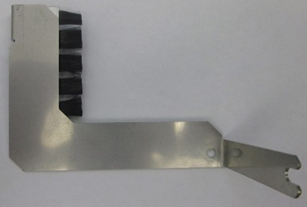
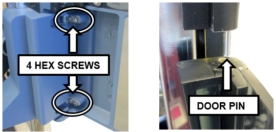
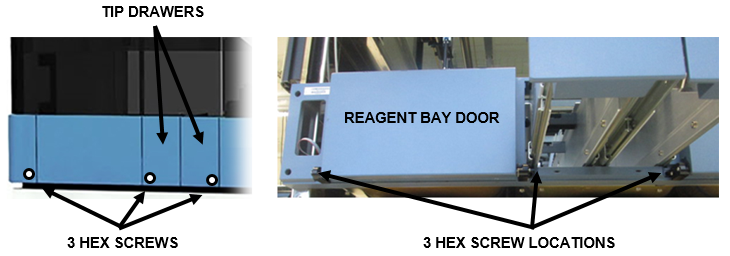
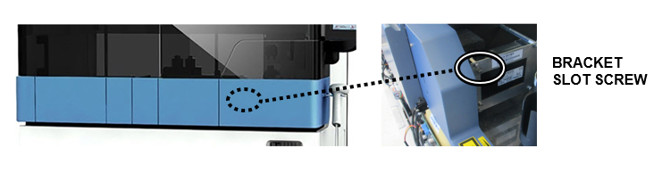
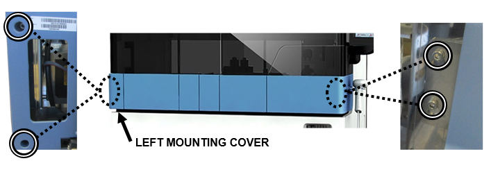
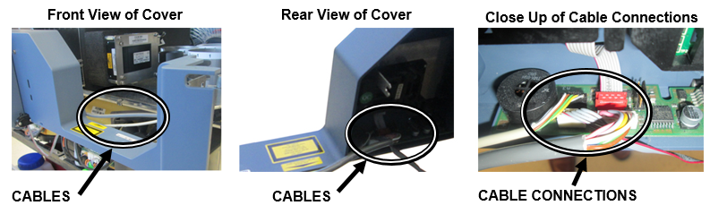
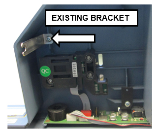
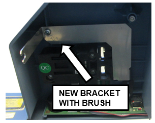
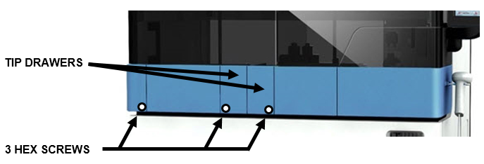

What is Affected
Installation of the TCR Target capture reagent—An assay-specific reagent added as part of specimen pipetting. Door grounding brush is designed to prevent Electrostatic Discharge (ESD) induced damage to the TCR Door interlock.
Target capture reagent—An assay-specific reagent added as part of specimen pipetting. Door grounding brush is designed to prevent Electrostatic Discharge (ESD) induced damage to the TCR Door interlock.
This part is cut into production on systems from Serial # 01560 and higher.
This procedure affects the TCR door on all Panther units before Serial # 01560.
Parts and Materials Required
- Proper PPE
- Panther Tool Kit
 TCR Door Grounding Brush
TCR Door Grounding Brush

Time Required
- 30 Minutes
Procedure
- Put on proper PPE.
- Shutdown the Panther instrument and PC.
- Open the right and left canopy doors.
- Open the TCR Door.
- Open the TCR Door and remove the four 2.5 mm hex screws that hold the door on its hinges.
- Tilt and slide the TCR Door away from the Panther to remove it from its pin.

- Open the Tip Drawers.
- Loosen the three 2.5 mm hex screws located on either side of the Reagent Bay and on either side of the Tip Drawer.

- Loosen the 3 mm bracket hex slot screw inside the TCR Door bay.

- Remove the Left Mounting Cover. Loosen and remove the four 3 mm hex screws on the far left and right of the Front Cover. Carefully allow the cover to rest on the open Tip Drawers for support.

- Carefully slide the Front Cover out just far enough to access the cable connections from the chassis.

Caution—Do not put any strain on the connected cables. - Disconnect all 3 cables inside the front cover.

- Carefully slide the front cover away from the instrument to get access to the existing bracket.
- Remove the existing bracket using a Philips screwdriver and discard.

- Replace with the new bracket and secure with the same screw.

- Reconnect the 3 cables inside the front cover.
- Slide the front cover back into place. Ensure the bracket arm (new brush) slides into the 2.5 mm bracket hex slot screw.
Caution—Ensure the ribbon cable that runs along the inside bottom of the front cover is still in place and is not pinched or damaged when sliding the front cover back into place. - Reinsert and tighten the four 3 mm hex screws on far left and right of the front cover. Reinstall the Press-fit Left Corner Cover.
- Reinsert and tighten the three 2.5 mm screws under the Tip Drawers. Close the Tip Drawers.

- Tilt the TCR door at an angle to reinsert the pin and line up screw holes with the hinges. Reinsert and tighten the four 2.5 mm hex screws that hold the door on the hinges.
- Close the TCR Door and Canopy Doors.
Verification
- Verify the TCR door opens and closes smoothly. Refer to TCR Door Alignment and Adjustment
- Power cycle the Panther instrument.
- Using the Panther service software, verify the TCR Door lock is operational. The door sensor should report as “Closed” when the door is locked and also when the door is pulled gently. Adjust the front cover and/or magnet screw if necessary to correct the sensor readings.
- Verify the TCR door lock is functional in the Panther GUI.
 button at the top of the page to send feedback, comments, or change requests.
button at the top of the page to send feedback, comments, or change requests.